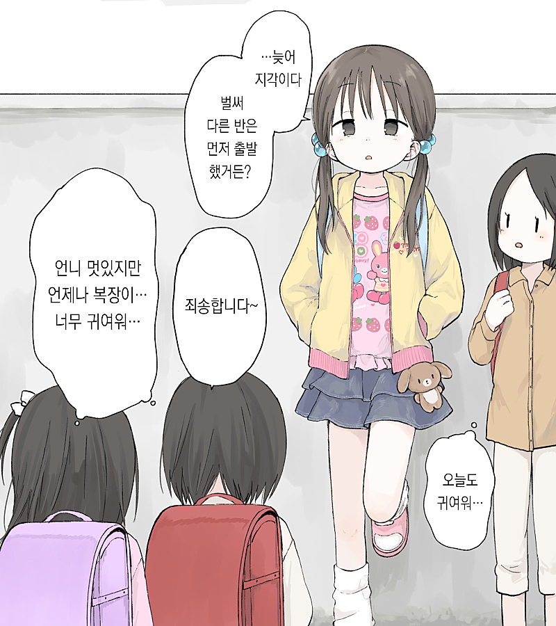
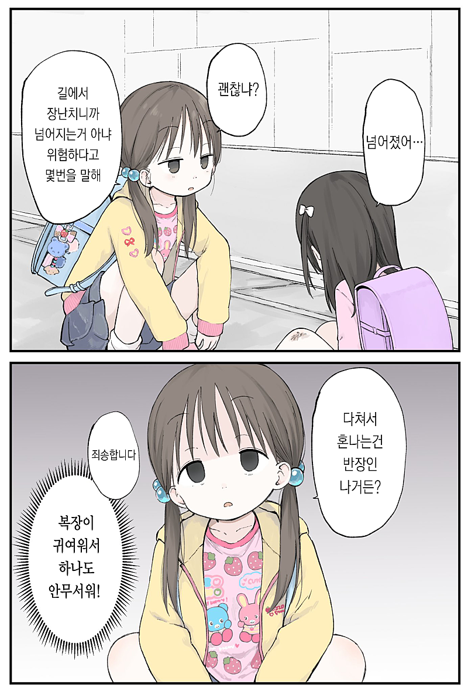
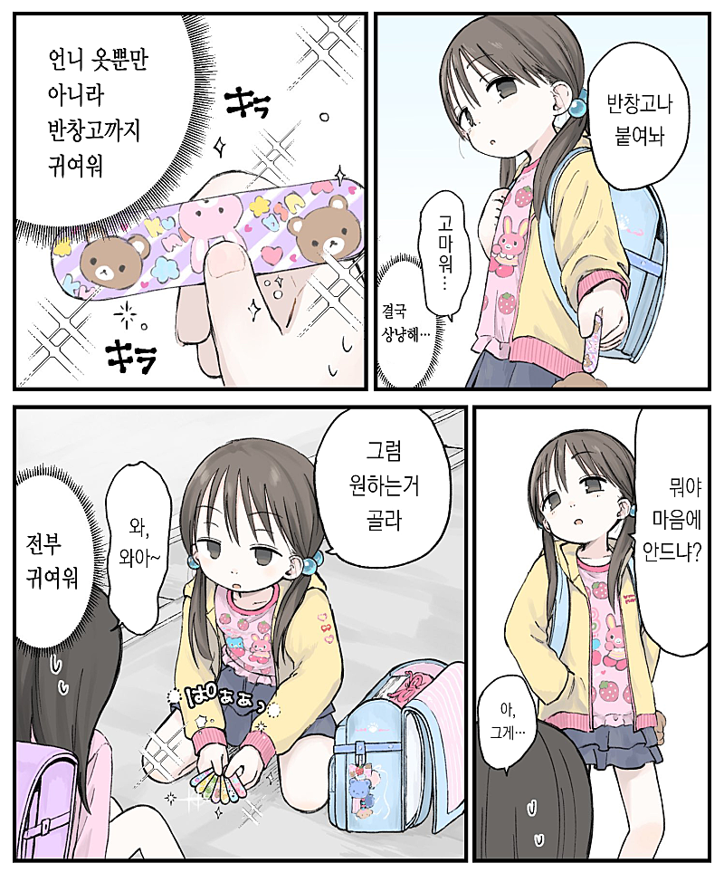
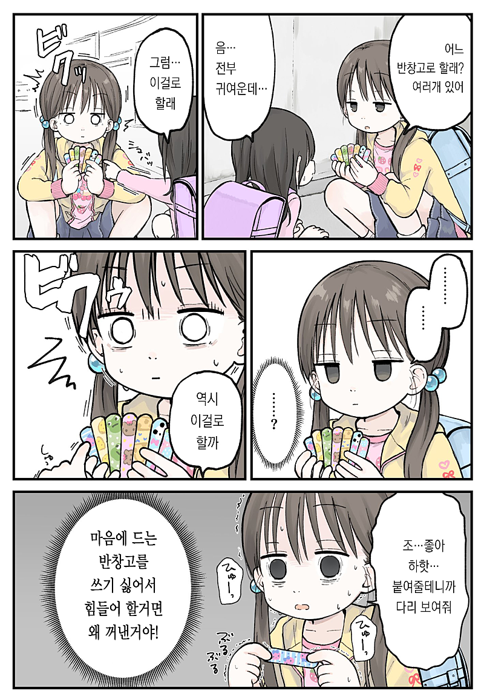
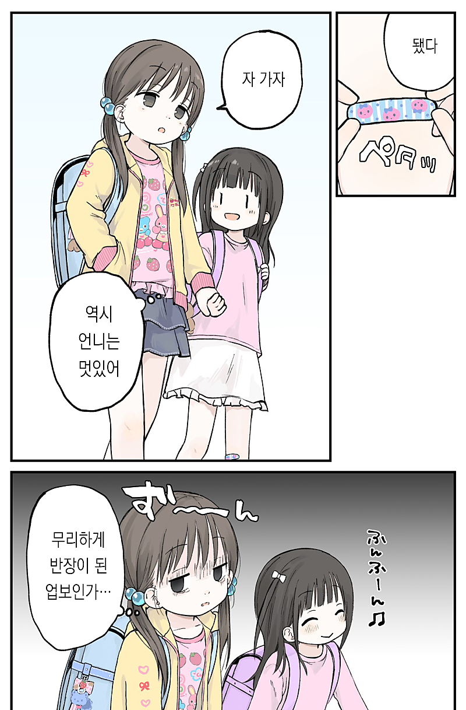
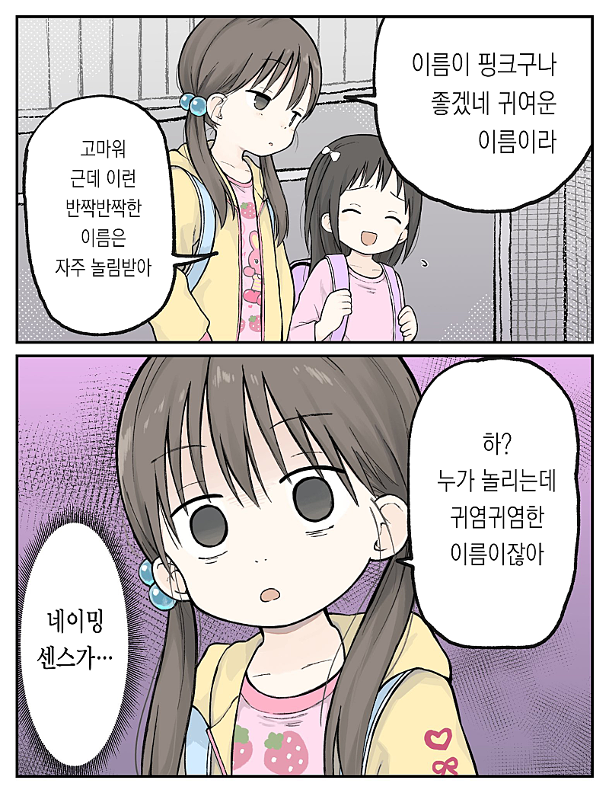
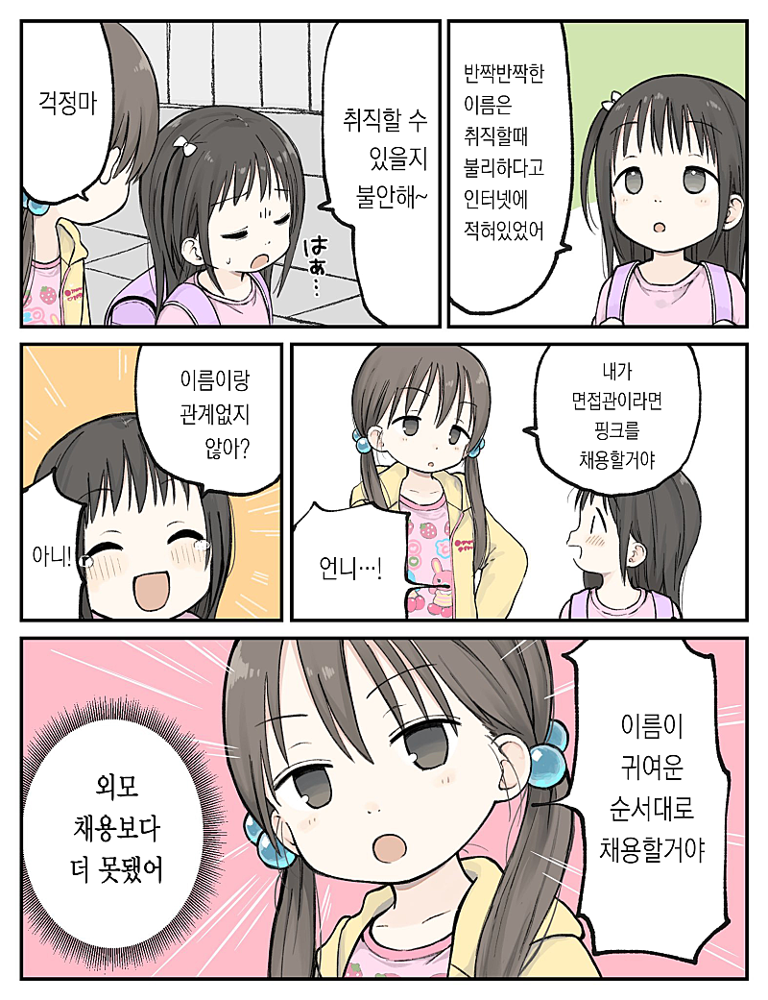
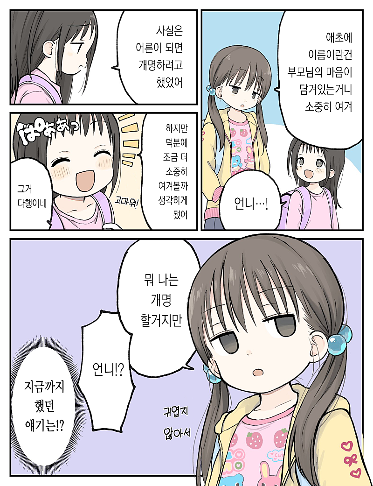
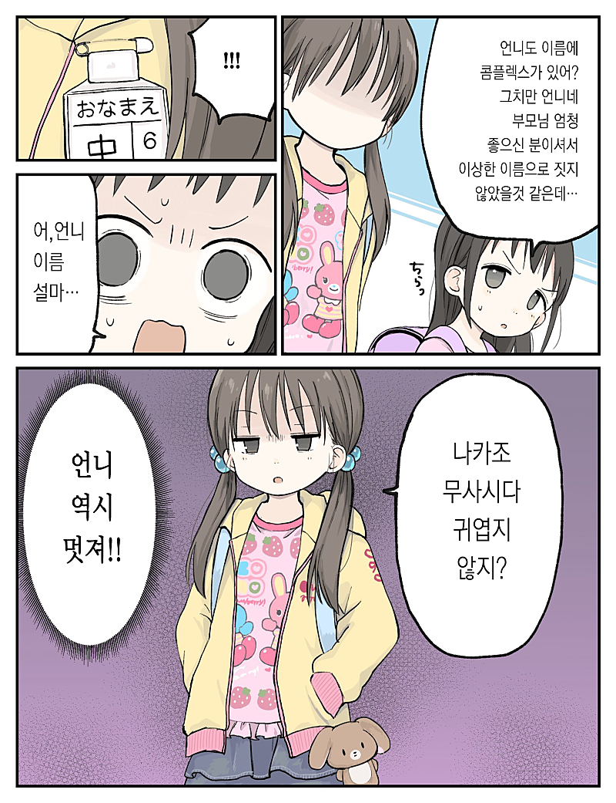
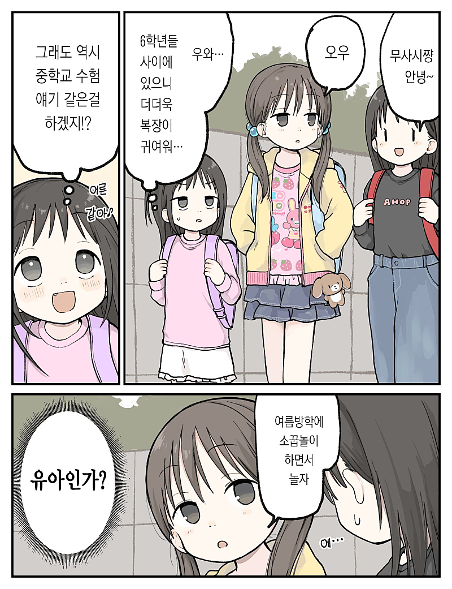
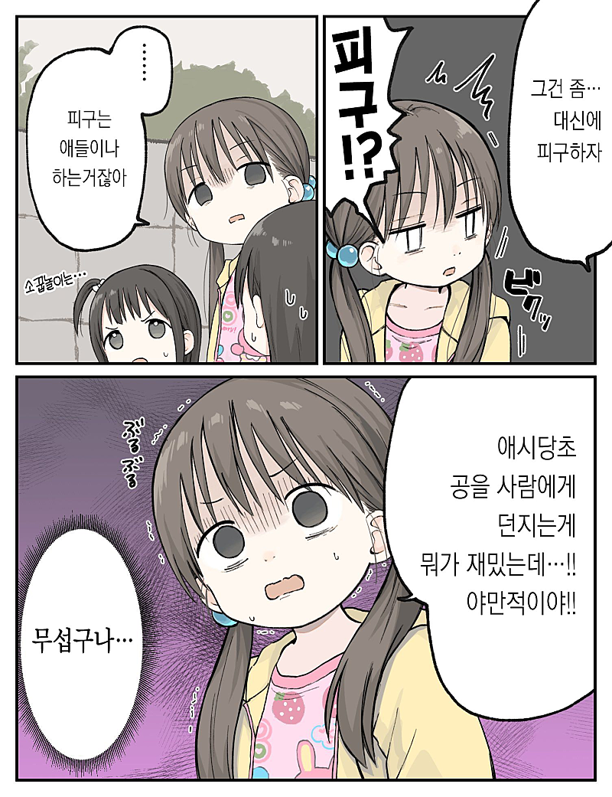
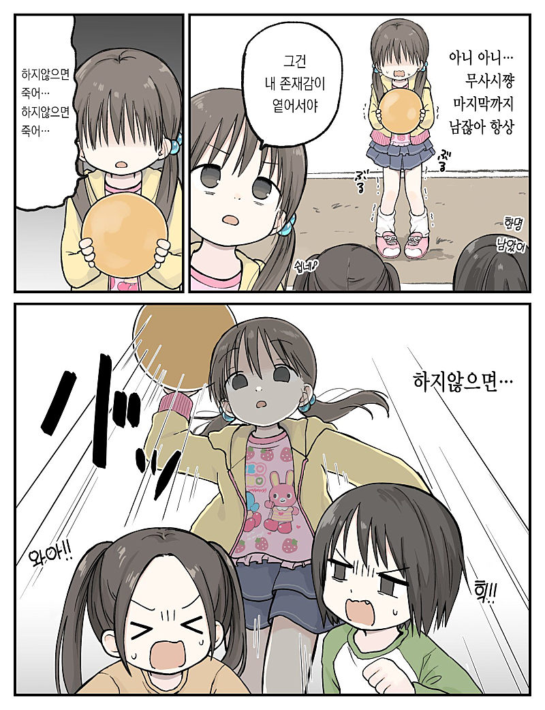
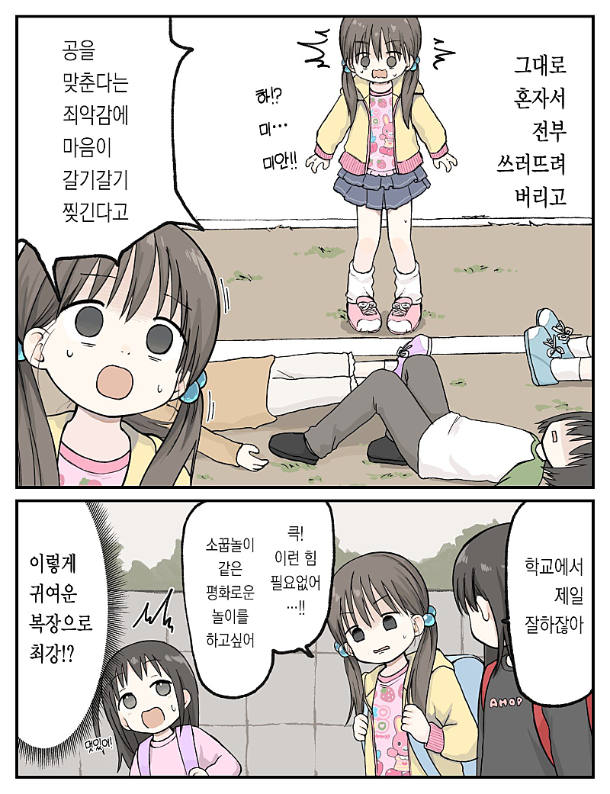













어떻게 여자 이름이 무사시
한국으로 따지면 이름이 철현 이런건가?
임꺽정
왕자지
척준경
ㅋㅋㅋ
무사시가 일본의 대표적인 검사 이름이라
한국으로 치면 척준경, 이순신, 이성계 그런 느낌?
이순신도 약간 여성스럽긴 하네
이거 재밌다 ㅋㅋㅋㅋㅋ
이쿠죠 무사시!
오우! 체인~지!!
여자애 이름이 어떻게 무사시
묘하게 딸기마시마로 느낌나네.. 콧구멍 때문인가
일진이야?